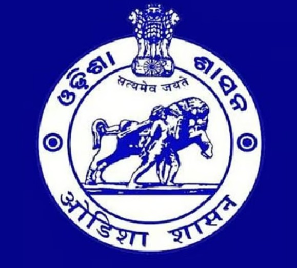
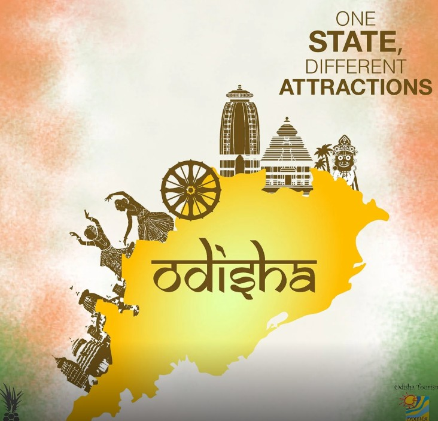

The historical monuments of Odisha stand testament to the glorious architectural heritage of the state. The Kalinga Architecture as it is known came into existence in the 6th century AD and continued unabated till the 16th Century AD. The Kings or Gajapati’s of Kalinga irrespective of dynasty encouraged the architects to express their creativity by infusing life into stone. What makes the Kalinga Architecture so distinctive and pleasing to the eye is its, structural details, plan, elevation and skillfully crafted figurines which adorns the outer walls of the monuments. The other notable thing about the monuments of Odisha is that the architectural style wasn’t rigid and throughout its history it continued to evolve incorporating new styles and aspects which added to their legend.
Odisha is well connected with major cities of India and South East Asia. By virtue of its demography, the state comes under the East Coast Railway Division. Also, with Bhubaneswar having a full-fledged International airport, Odisha is directly connected to major cities of India, and internationally with Kuala Lumpur as well as Bangkok.Odisha with its beautiful landscape and well-paved roads provide a delightful experience to bikers, cyclists and car enthusiasts.
